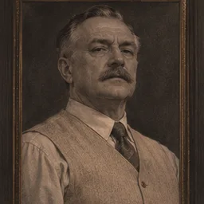
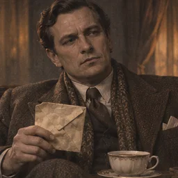
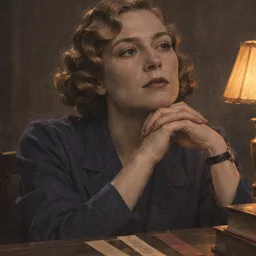
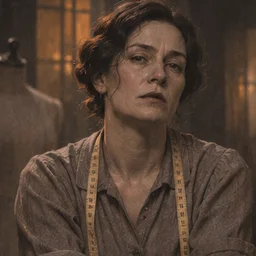

Книга ведущего · Детективный нуар; пространственная реконструкция убийства · 18+ · 3–8 игроков + ведущий
Шестьсот восьмая комната
В отеле «Контур» находят убитого писателя. Парадную дверь его номера непрерывно видели из галереи; окна закрыты. Постояльцы уверены: никто не входил. Чтобы восстановить случившееся, придётся увидеть тот же этаж глазами людей, которые приносят чашки, чинят краны и остаются незаметными. Разгадать доступ легче, чем доказать убийство и не превратить работников в удобных виновных.
Перед чтением вступления сверьте место героев, присутствующих людей и предметы с итогом прошлого вечера. Если условия встречи отпали, сыграйте последствия там, где находится партия. Событие по расписанию может произойти за кадром. Герои узнают о нём от тех, кто был на месте.
Вечер 5. Если хозяин сумки навсегда отказал в осмотре
Оставьте содержимое неизвестным. Предложите проверить одну из моделей входа наблюдениями на этаже. На показе отделите установленный путь от имени человека, который мог им воспользоваться.
Группа отказалась от задания
Не берём заказ установить виновного в комнате 608. Сумку не вскроем. Опечатаем её при владельце и проверим коридор снаружи. При свидетеле сверяем печать и снимаем время снаружи. Печать цела. У следствия есть наблюдения у двери, но никакого свидетельства о содержимом сумки.
Игроки раскрыли тайну раньше
Сопоставим застёжку с временной границей воды и показаниями о доступе. Попросим проверить, что реально видно из галереи. Доступные свидетельства — Два обломка застёжки, Вода в 20:18 и гостевая цепочка. Манжета связывает улику с пальто Зинаиды; отдельная подпись подтверждает, что Григорий был жив в 20:18. Каждая связь имеет свои пределы. Даём Тимуру самому сопоставить часы и подпись. Вывод о доступе можно проверить без вскрытия чужой сумки. Называем виновную только при достаточной независимой цепи; время само по себе не обвинение.
Партия уступила поле
Тележки отрезали доступ к шкафам, один срок проверки пропущен. Берём в коридоре два показания отдельно. Снимаем показания в коридоре порознь. В финале сообщаем неопределённость вместо выдуманного предмета из закрытого шкафа.
Карман ведущего
Для игры без подготовки: что говорят люди, места в стороне от главной дороги и прохожие. Пометки о правде слухов — только для ведущего; сказанное за столом становится фактом мира, лишь когда вы его подтвердите.
Слухи
«В „Контуре“ не теряют ключей и не задают постояльцам лишних вопросов. Полвека так стоит, и полвека так говорят».
Правда. Портовая присказка из пролога. Ключи здесь действительно ведут по книге, и эта гордость отеля пригодится во втором вечере, когда группа сверяет книгу ключей и конверт.
«В лучших номерах „Контура“ есть сервизные: посуду туда подают с чёрного хода. Пароходные пассажиры любили ужинать у себя».
Правда. Правда, и не тайна: дверь «Сервизная» подписана, персонал ходит через неё каждый день. Инна скажет то же в первом вечере. Не задерживайте этот путь ради загадки.
«Шестьсот восьмой — номер нехороший. Туда, говорят, селят только тех, кто приехал в последний раз».
Неправда. Суеверие, родившееся после убийства. Номер как номер; Софья в восьмом вечере ответит старой поговоркой отеля, что номер не виноват в том, что в нём случилось.
«Писателя достали через окно. По отливу под окнами можно пройти вдоль всего этажа, если не бояться высоты».
Неправда. Неправда: исходные снимки и целые бумажные полоски под рамами исключают окно, а выход на отлив в игре не разыгрывается. Слух полезен только как защитник модели «окно» в третьем вечере.
«Хороший портье по шагам на ковре узнаёт, кто идёт. Наш, говорят, каждого постояльца угадывает с закрытыми глазами».
Неправда. Ковры «Контура» гасят шаги, и никто в этой истории не узнаёт человека по звуку. Слух помогает показать предел слышимости, который проверяется во второй сцене третьего вечера.
«Посыльный подписал, что никто в номер не входил. А теперь твердит, что ничего такого не писал».
Отчасти правда. Тимур говорил только о гостевой двери; слова «никто не входил» — чужая приписка. Это ошибка формулировки, а не вина. Исправить её перед теми же людьми — задача первого вечера.
«Горничные знают в отеле больше ходов, чем любой гость. На то они и горничные».
Отчасти правда. Верно, что служебный путь известен всему персоналу и им пользуются каждый день. Ложно, будто знание дороги указывает на виновного: возможность пройти не доказывает, кто прошёл.
«Юбилейные книги общества путешественников уже розданы. Теперь их по всему городу не соберёшь, хоть объявление давай».
Правда. Так и есть: Мила в шестом вечере покажет почти пустую коробку и отметки выдачи. Убийство не могло остановить публикацию; содержание спорного абзаца слух не называет.
«Туман с залива у нас приходит раньше вечерних газет. Кто вышел без шарфа, тот к ночи кашляет».
Правда. Нареченская примета. Чистый колорит для улицы и вестибюля: в эти вечера дождя нет, есть низкие облака и туман.
«Швейцар в девять убирает табличку „Добро пожаловать“, а свет у входа оставляет — чтобы опоздавшие с парохода видели, что их ждут».
Правда. Обычай отеля из пролога. В восьмом вечере табличку не убирают до полуночи — так можно показать, что «Контур» снова живёт обычной жизнью.
«Общество пеших путешествий собирается в „Контуре“ с тех пор, как его основатели отплыли отсюда в первый поход на север».
Отчасти правда. Юбилейный вечер в отеле правда назначен на эту неделю. Остальное — легенда, которую любят повторять секретари общества; ни на кого из участников она не указывает.
Места в стороне
Скамья пароходных ожиданий
Длинная чугунная скамья на набережной напротив «Контура», лицом к причалу. Здесь ждали пароходов ещё прадеды нынешних постояльцев, и спинка отполирована плечами до блеска. На подлокотнике выцарапаны десятки инициалов и дат прибытия. Ночная смена отеля выходит сюда покурить, когда в вестибюле нельзя, и смотрит, как туман съедает огни на воде.
Чайная «Склянка»
Тесная чайная у портовых ворот, открытая с пяти утра. Сюда после ночной смены приходят горничные, посыльные и кочегары всех гостиниц набережной: пьют крепкий чай из толстых стаканов и меняются новостями, которых постояльцы никогда не услышат. Хозяйка держит на стене доску, где мелом пишут, в какой гостинице нужны руки на неделю.
Книжный развал у моста
Несколько деревянных лотков под парусиной у разводного моста, где продают подержанные книги, лоции и путеводители. Осенью сюда всегда приносят юбилейные издания обществ и клубов: прочитали раз — и сдали за мелочь. Букинист раскладывает их по цвету обложек, а не по названию, и уверяет, что так покупателю проще.
Маяк на северном молу
Низкая каменная башня в конце мола, откуда в туман каждые две минуты гудит ревун. Его хриплый голос слышен во всех номерах набережной, и старые постояльцы «Контура» по нему считают время ночью, не зажигая света. Смотритель маяка живёт там же, внизу, и на подоконнике у него всегда сушатся чьи-то перчатки, оставленные на молу.
Табачная лавка у швейцарской
Крошечная лавка в нише рядом с входом в «Контур», с окошком прямо на улицу. Здесь продают папиросы, спички, открытки с видом отеля и марки для писем домой. Хозяин закрывает окошко ровно в тот момент, когда швейцар убирает табличку у двери, и ни минутой позже. На прилавке лежит книга, где постояльцы оставляют заказы на газеты к утру.
Прохожие
Лукьян Бобров
Швейцар «Контура» в ливрее с потускневшими галунами, седые усы, белые перчатки, которые он меняет трижды за вечер.
«Добро пожаловать в „Контур“. Свет у входа горит для всех, кто опоздал».
Может рассказать: Каждый вечер в девять убирает табличку «Добро пожаловать», а свет у входа оставляет до последнего парохода.
Фёдор Кочегар
Плечистый мужчина в прожжённой фуфайке, лицо в угольной пыли; на шее полотенце, которое давно стало серым.
«Шестой этаж с южной стороны всегда мёрзнет. Трубы туда доходят уже уставшие».
Может рассказать: Знает, что батареи южных номеров шестого этажа к ночи остывают: котельная не дотягивает до них полным жаром.
Варвара с развала
Букинистка в мужском пальто и вязаной шапке, с карандашом за ухом и стопкой путеводителей, перевязанной бечёвкой.
«Книги, милые, сдают, как перчатки: прочитали, и не по руке».
Может рассказать: Каждую осень на её лотки попадают юбилейные издания клубов и обществ: их сдают за мелочь, едва прочитав.
Устин Лоцман
Старый лоцман в бушлате и фуражке без кокарды, трубка без табака в зубах, глаза прищурены от вечного тумана.
«Туман у нас приходит раньше газет, а уходит позже гостей».
Может рассказать: Расскажет, что «Контур» строили для пассажиров северных пароходов и что окна лучших номеров раньше смотрели на причал.
Серафима Телефонистка
Немолодая телефонистка гостиничной будки в вестибюле, наушник сдвинут на одно ухо, на столике вязанье и стакан холодного чая.
«Город соединяю за минуту. А с соседним номером — сами, ногами».
Может рассказать: Знает, что городской телефон в вестибюле один, а звонки по городу записывают в книжку по времени и номеру комнаты.
Яков Газетчик
Юркий газетчик с сумкой через плечо и пачкой вечерних листков под мышкой, кепка сдвинута на ухо.
«Вечерний выпуск! Про туман, про пароходы и про то, о чём в „Контуре“ молчат!»
Может рассказать: Знает, что вечерние газеты в Нареченске выходят в шесть и что туман обычно опережает их на час.
За десять минут до первой игры
Откройте первый вечер, прочитайте правду мира и участников. Остальные вечера — планы, их исход решают игроки.
Выберите пакет под фактическое число игроков. Первые три героя — готовое ядро; остальные добавляются по порядку. Возраст игрока не определяет героя.
Согласуйте темы, длительность и сигнал паузы. Передайте игрокам только players.html; раздатки выдавайте по отдельности после указанного открытия.
Откройте Мастерскую проекта, создайте личный черновик и импортируйте выбранный JSON через загрузку пакета. Проверьте состав и начало в предпросмотре. Запуск кампании подтверждает ведущий штатным действием.
Откройте иллюстрацию завязки отдельно. Портреты героев входят в файл для игроков, портреты встречных — в книгу ведущего. Тактические схемы доступны в разделе карт.
8 вечеров; 180 минут: вводная и повтор 15, три сцены по 45, перерыв 15, завершение 15.
Вымышленный портовый город Нареченск, эпоха механических ключей, проводных звонков и бумажных квитанций. Герои — независимые специалисты, которых инспектор допускает к совместному осмотру по просьбе представителя семьи. Листы воина, плута, жреца и волшебника третьего уровня — условные профили выдержки, наблюдательности, заботы и анализа. Магия отсутствует; сверхъестественные эффекты выключены. Профиль боевого посоха обозначает обычную трость; огнестрельное оружие, медицина и право отдельными правилами не моделируются.
Вежливые фразы, тяжёлые ковры, усталый труд и цена доверия; взрослый детектив без натуралистических подробностей.
Невидимый труд и чужая уверенность в том, что всё было видно
Месть, чужое право распоряжаться памятью и ответственность за насилие
Право свидетеля на частную жизнь и цена публичного обвинения
Границы
18+; каждому герою, НИП и упомянутому работнику не менее 21 года. Дети в сюжете не участвуют.
Убийство уже произошло; тело описывается без повреждений крупным планом. Нет сексуальных сцен, сексуального насилия и натуралистической жестокости.
Перед игрой согласовать темы увольнения, утраты жилья и болезни близких. Любую сцену можно затемнить, заменить письменным резюме или остановить без объяснения личного опыта.
Реконструкции добровольны, без контакта и изображения удара. Публичность имени свидетеля требует отдельного согласия; отказ не закрывает ключевую улику.
Проверки — игровые процедуры, не профессиональные советы о расследовании, лечении или законе. Правовые решения в вымышленном городе определяет ведущий.
Люди за столом
Первые три героя дают жизнеспособное ядро: наблюдатель, посредница и технический аналитик. Любую их задачу может выполнить любой участник; места 4–8 добавляют перспективы, не ключи от сюжета.
Каждую сцену меняйте первого говорящего. Разрешайте записку, короткий выбор и пас без объяснения. Не требуйте признаний из жизни игроков.
При разделении назначьте каждой группе вопрос и точку встречи. Чередуйте по одному действию или пяти минутам разговора; перед следующим шагом объединяйте только добровольно переданные сведения.
На общем листе ведите три колонки: наблюдение, чужое утверждение, вывод. Отмечайте, что исключает улика и чего она не доказывает. Это заметки стола, не новая игровая механика.
При отсутствии игрока его герой занимается протоколом за кадром; все полученные материалы остаются группе. Личную развязку откладывайте или принимайте заранее записанное пожелание.
Сцена заканчивается общей формулировкой следующего проверяемого вопроса. При споре теорий предлагайте безопасный опыт, а не голосование о виновности. Доступ и основные следы выдавайте за конкретное действие без обязательного броска.
Масштабирование группы
3 игроков
Одна группа; последовательно распределяйте осмотр, беседу и фиксацию. Два одновременных запроса разрешайте через ответ инспектора после сцены. В необязательной стычке два противника, хиты 12 каждый; открытый отход сохраняется.
4 игроков
Две пары проверяют видимость и показания, возвращаясь через один обмен действиями. Четвёртый участник может спорить с общей моделью. В необязательной стычке три противника, хиты 14.
5 игроков
Пара наблюдателей и тройка собеседников меняются задачами между сценами. Протокол ведёт новый человек каждый вечер. В необязательной стычке три противника, хиты 16.
6 игроков
Три пары: пространство, вещи, люди. Давайте каждой один проверяемый вопрос; встреча после одного опыта. В необязательной стычке четыре противника, хиты 18.
7 игроков
Две пары и тройка; в тройке отдельный участник проверяет согласие свидетелей. Чередуйте докладчиков, не оставляйте человека вечным секретарём. В необязательной стычке пять противников, хиты 20.
8 игроков
Четыре пары получают ограниченные участки проверки; после каждого короткого хода общий возврат. В демонстрации есть роли наблюдателя, маршрута, согласия и возражения. В необязательной стычке шесть противников, хиты 22; цель остаётся уходом или защитой доступа, а не уничтожением.
Первое чтение вслух
Девять вечера. За стеклом вестибюля висит низкая облачность, огни порта расплываются в ней жёлтыми пятнами, но мостовая сухая: дождь в Нареченске сегодня так и не пошёл. Отель «Контур» стоит на набережной полвека. Его строили для пассажиров северных пароходов, и с тех пор он обещает приезжим покой — тяжёлые ковры, латунные ручки, горячий чай в любой час. Обеспечивает этот покой смена, которую постояльцы почти не замечают: посыльные, горничные, механик, швея в бельевой. Про «Контур» в порту говорят, что здесь не теряют ключей и не задают постояльцам лишних вопросов. На этой неделе здесь живут гости юбилейного вечера общества пеших путешествий; в малом зале уже расставлены стулья для завтрашнего выступления. Швейцар убирает табличку «Добро пожаловать», оставляя свет включённым. Часы над латунной стойкой отбивают девять, и портье в третий раз за десять минут протирает и без того чистую латунь. Инспектор Инна Рост, в простом пальто и с папкой карточек под мышкой, кладёт перед вами два заявления. В номере 608 на шестом этаже убит писатель Григорий Ракитин, автор путевых очерков, и его брат попросил, чтобы осмотр вели не одни служащие отеля. «Дверь всё время была передо мной», — написано на первом листе. «В номер весь вечер носили посуду», — на втором. Инспектор не комментирует ни одного. Двери лифта открываются, и с шестого этажа спускается тележка с нетронутым ужином: серебряная крышка, остывший соус, сложенная салфетка. Посыльный катит её мимо вас, не поднимая глаз. Никто не хочет первым назвать это противоречием.
Правда мира · только ведущему
Григорий Ракитин, автор путевых очерков, убит в 608-м в 20:24 того же вечера управляющей Зинаидой Таль. В 20:18 он ещё лично принял воду; это не загадка более ранней смерти. Зинаида не подменяет никого и не пользуется воспроизведёнными голосами.
Восемнадцать лет назад руководитель любительского горного похода Григорий оставил травмированную Аглаю Таль, 31 год, в укрытии и вызвал помощь только после возвращения в город. Она погибла до прихода спасателей. Его старое подписанное признание сохранилось. В уже напечатанной юбилейной книге он теперь обвиняет Аглаю в самовольном уходе. Её сестра Зинаида убила его из личной мести за оставление и новое унижение памяти. Публикацию убийство остановить не могло; финансового мотива, тайной кражи или защиты должности в причине убийства нет.
Северная гостевая дверь 608-го ведёт из галереи в прихожую и гостиную. Из гостиной обычная дверь с табличкой «Сервизная» ведёт в маленькую моечную; из неё в восточный служебный коридор ведёт дверь с цилиндровым замком и номером 608. Это известный персоналу повседневный путь посуды. Он показан действующим обмером, не ошибочным или проектным чертежом. Тоннелей и замаскированных проходов нет.
После получения воды Григорий защёлкнул цепочку гостевой двери. Зинаида в 20:21 вошла обычным ключом через служебную дверь, после отказа признать ответственность намеренно нанесла смертельный удар бронзовым дверным упором из сервизной и в 20:26 ушла тем же путём, закрыв замок. Внутренняя дверь сервизной не запиралась. Цепочку гостевой двери сняли через допустимую щель при обнаружении в 20:35; след этого действия зафиксирован инспектором.
Зинаида пользовалась резервным служебным ключом, выданным ей под расписку. Рабочий ключ находился в опечатанном ремонтном конверте. Ключ сам по себе не доказывает убийство: нужны следы присутствия, орудия и независимая проверка алиби. Упор Зинаида положила в свою закрытую рабочую сумку; её опечатали при первичном осмотре, не обыскивая до согласования.
Гостевая галерея и восточный служебный коридор разделены глухими стенами. В обход через гостиную путь проходит через гостевую дверь и две двери сервизной. С галереи не видно служебную дверь; закрытая гостевая дверь, прихожая и ковры мешают различать слова. Лифтовой холл не единственный путь между этажами: обычная лестница соединяет служебный коридор с бельевой пятого этажа. Никто не использует невозможную акустику или безошибочное определение личности по шагам.
Старшая горничная Софья скрывает ночлег двух взрослых работников в бельевой; постоялец Павел скрывает визит к заболевшей сестре, противоречащий его работодателю. Эти тайны объясняют неполные ответы, но не убийство. Нельзя менять виновную под теорию группы. К концу третьего вечера путь доступа становится установленным фактом; далее игра проверяет причастность, обращение с людьми и достаточность публичного доказательства.
Повороты сюжета
Только для ведущего. Сюжетные повороты держатся на мелочах, замеченных заранее: посейте их в названные вечера, а раскрытие отдайте героям, если они догадались раньше.
Запертый номер не был заперт
Номер 608 кажется запертой загадкой: гостевая цепочка закрыта изнутри, посыльный клянётся, что никто не входил, окна смотрят в глухой двор. На деле у номера есть обычный второй вход: дверь с табличкой «Сервизная» ведёт в моечную, а оттуда в служебный коридор. Это повседневный путь посуды, известный всему персоналу, и никакой тайны в нём нет.
Что посеять
Вечер 1. Тимур признаёт только слова о гостевой двери, а приписку «никто не входил» читает впервые: «Я сказал про дверь».
Вечер 1. На фотографиях Инны одна из дверей гостиной открыто подписана: «Сервизная».
Поворот — вечер 2
Софья проводит обычную доставку чистой чашки: бельевая, лестница, служебный коридор, ключ Егора, моечная, сервизная, гостиная — а гостевая цепочка всё это время закрыта. Пусть стол сам поймёт, что запертой комнаты не было. Если доставку не проводили, Егор пронесёт чашку тем же путём при Инне в третьем вечере.
Что меняется после
Вопрос «как вошли» закрыт, и главным становится «кто вошёл». Круг возможных людей сужается до тех, у кого был ключ от служебной двери, — но ключ ещё не доказывает руку. Дальше игра разбирает причастность, а не геометрию.
Месть за оставленную сестру
Убийство писателя накануне юбилея выглядит то ли ссорой о деньгах, то ли попыткой остановить книгу. На деле управляющая Зинаида Таль — сестра Аглаи, которую Григорий восемнадцать лет назад оставил травмированной в горном укрытии. В уже напечатанной книге он обвинил погибшую в самовольном уходе. Остановить публикацию убийство не могло: это месть, а не расчёт.
Что посеять
Вечер 1. Павел признаёт, что спорил с писателем об оплате очерка, — и этот спор выглядит удобным мотивом, пока не появляется оплаченный счёт.
Вечер 3. В кабинете управляющей лежит юбилейная книга с пометами на полях — у абзаца об Аглае, обвинённой в самовольном уходе.
Поворот — вечер 4
Антон вскрывает конверт брата: письмо Зинаиды о личном ответе, согласие Григория встретиться после 20:20 через служебный вход и старое признание в том, что он оставил Аглаю. Пусть стол сам поймёт, кем Зинаида приходилась погибшей и зачем пришла. Если конверт не вскрыли, ту же правду в шестом вечере дадут бумаги Милы.
Что меняется после
Мотив найден, а вместе с ним пришло искушение оправдать удар старой подлостью. Расследованию теперь приходится держать две правды сразу: Григорий оставил Аглаю, и Григория убили. Исправление книги и обвинение в убийстве становятся двумя разными делами.
Свидетельница в дверях сервизной
Кажется, что в служебном коридоре в нужные минуты никого не было: персонал разошёлся, а галерея видела только гостевую дверь. На деле швея Нина Лехт в 20:25 через открытые двери сервизной видела лицо Зинаиды, бронзовый упор в её руке и неподвижного Григория у кресла. Зинаида велела ей не входить, и Нина ушла, записав в журнале остановку доставки.
Что посеять
Вечер 2. В журнале выдачи белья попадается странная строка: «608: не входить, распоряжение Таль», — а доставку в тот час кто-то перенёс.
Вечер 3. Егор вспоминает, что в 20:27 видел Зинаиду, выходившую на лестницу с рабочей сумкой, а Софья — что в 20:28 та стояла у лестницы в пальто.
Поворот — вечер 4
В бельевой Нина Лехт, без начальницы и на своих условиях, отдаёт письменную схему: лицо Зинаиды, упор в руке, Григорий у кресла, удара не видела. Софья независимо показывает перенос доставки в своём листе. Пусть стол сам поймёт, что свидетельница всё это время была на этаже. Если Нина откажется даже от схемы, цепь удержат её строка в журнале и обломки застёжки.
Что меняется после
У дела появляется очевидица — и обязанность её беречь: Нина не хочет выступать, боится начальницы и не позволяет называть себя свидетельницей удара. Публичное обвинение теперь нужно строить так, чтобы её имя не стало ценой правды.
Досье дела · только ведущему
Как человек вошёл в 608-й, когда гостевую дверь непрерывно видели, кто убил Григория Ракитина и какие независимые факты позволяют назвать этого человека?
Виновник: Зинаида Таль.
Личная месть за сестру Аглаю Таль, 31 год на момент гибели. Восемнадцать лет назад Григорий оставил её после травмы в горном укрытии и вызвал помощь слишком поздно. Его старое признание сохранилось. Теперь уже напечатанная юбилейная книга ложно обвиняет погибшую в самовольном уходе. Зинаида намеренно убивает Григория за прошлое оставление и нынешнее унижение памяти. Она не спасает работу, не скрывает хищение, не устраняет свидетеля и не может отменить состоявшуюся публикацию. Ведущий не объявляет месть оправданием убийства.
Неоперационная сводка: Зинаида пришла на согласованную встречу обычным служебным путём через подписанную сервизную. Резервный ключ был выдан ей законно. После отказа Григория признать ответственность она намеренно убила его тяжёлым дверным упором, затем унесла предмет в своей сумке. Гостевая цепочка и окна не трогались. Тайна возникает из неверного расширения наблюдения за одной дверью на все способы входа. Никаких скрытых тоннелей, подмены человека, воспроизведения голоса или сдвига смерти на раннее время нет.
Что произошло до начала игры
За восемнадцать лет до убийства. Григорий оставил травмированную Аглаю Таль, 31 год, в укрытии и обратился за помощью только после возвращения в город. Она погибла до прихода спасателей. Факт подтверждён его старым подписанным признанием; нынешние НИП, кроме самого Григория, не становятся задним числом очевидцами похода. Свидетели: Григорий Ракитин.
За неделю до убийства. Юбилейная книга Григория уже напечатана и распространена. В ней он ложно утверждает, что Аглая ушла от группы сама. Мила сверила текст со старым письмом, но не добилась исправления. Свидетели: Григорий Ракитин, Мила Судак.
В день убийства, до вечерней смены. Зинаида потребовала личного ответа. Григорий согласился встретиться после 20:20 в 608-м и предложил служебный вход, чтобы не проходить мимо читателей. Антон получил конверт с копиями этой переписки и старого признания. Свидетели: Зинаида Таль, Григорий Ракитин, Антон Ракитин.
19:40. Софья и Егор запечатали повреждённый рабочий ключ сервизной 608-го. Их подписи пересекают клапан; ремонт отложен. Свидетели: Софья Дрозд, Егор Яшин.
20:05. Зинаида получила резервный служебный ключ лично и расписалась. Выдача не означает всеведения регистратора о каждом последующем движении ключа. Свидетели: Зинаида Таль.
20:18–20:19. Тимур передал воду живому Григорию через гостевую дверь и получил подпись. Григорий закрыл цепочку. Тимур и Павел остались в гостевой галерее до обнаружения тела. Свидетели: Тимур Улан, Григорий Ракитин, Павел Резник.
20:21. Зинаида вошла через восточный служебный коридор, штатный замок и сервизную. Внутренняя дверь не запиралась. Этот факт относится к истине ведущего; НИП, не наблюдавшие вход, знают лишь свои отдельные основания. Свидетели: Зинаида Таль, Григорий Ракитин.
20:24. Зинаида намеренно убила Григория упором из сервизной. При контакте сломалась керамическая застёжка её пальто: часть осталась у погибшего. Удар и точная минута — фиксированная истина ведущего, а не то, что обязан распознать медицинский бросок. Свидетели: Зинаида Таль, Григорий Ракитин.
20:25. Нина подошла с бельём и через две открытые двери увидела лицо Зинаиды, упор в её руке и неподвижного Григория у кресла. Удара не видела. Зинаида велела не входить. Нина записала остановку доставки; Софья внесла перенос в отдельный лист. Свидетели: Нина Лехт, Зинаида Таль, Софья Дрозд.
20:26–20:31. Зинаида вышла через сервизную, закрыла служебный замок, спустилась с сумкой в руках. Егор видел её в 20:27, Софья — в 20:28. Она заперла сумку в кабинете, вернула резервный ключ в 20:31. Свидетели: Зинаида Таль, Егор Яшин, Софья Дрозд.
20:35–20:50. Инну, находившуюся на юбилейной встрече в малом зале, позвали к безответной двери в 20:33. В 20:35 номер открыли с фиксацией закрытой гостевой цепочки. Инна зафиксировала окна и предметы, затем спустилась в кабинет на пятом этаже и в 20:50 при Зинаиде опечатала её сумку. Дубликат ключа кабинета оставался в целой аварийной коробке. Свидетели: Инна Рост, Тимур Улан, Павел Резник, Зинаида Таль.
21:00. При облачной сухой погоде приглашённая группа собралась в вестибюле. Последующие решения игроков ещё не произошли. Свидетели: Инна Рост.
Независимые пути доказательства
Штатный доступ, физический контакт, личная угроза
Обмер доказывает доступ без гостевой двери. Книга и конверт связывают рабочую возможность с Зинаидой; точный стык керамики связывает её пальто с погибшим. Её письмо на опубликованной книге устанавливает личный повод встречи и угрозу. Каждый факт ограничен: ключ можно передать, пальто можно трогать, гнев не равен убийству. Вместе с отрицанием Зинаидой входа после 20:18 цепь даёт проверяемое основание обвинения без сумки и без Нины. Доступ уже показан вечером 2, сравнение и мотив — вечером 3, по запросу раньше.
Улики: Две двери сервизной; Конверт рабочего ключа; Два обломка застёжки; Юбилейная книга с пометами.
Предмет из сервизной и непрерывность владения
Место упора и реальный проход осматриваются вместе: гостевая цепочка к ним отношения не имеет. Совместимый с повреждением предмет со следами человеческой крови находится в опечатанной личной сумке; отдельная проверка свидетелей, кабинета и печати связывает сумку с Зинаидой после выхода по служебной лестнице. Старое признание, уже вышедшая ложь и её требование объясняют месть. Это самостоятельная вещественная цепь, без застёжки, резервного ключа как обязательной улики и рассказа Нины. Сохранность проверяется вечером 5, мотив — вечером 6 либо раньше.
Улики: Пустое место дверного упора; Содержимое опечатанной сумки; Путь личной сумки; Признание и уже вышедшая книга.
Проверяемое зрительное наблюдение и предварительная встреча
Геометрия показывает, откуда Нина могла видеть лицо и гостиную, хотя гости не видели входа; акустический опыт исключает ложную уверенность в распознанном голосе. Её запись и независимый лист Софьи появились до обнаружения. Нина видела Зинаиду с упором рядом с неподвижным Григорием, но не сам удар. Предварительное письмо независимо подтверждает служебный вход, встречу и личную месть; старое признание в семейном конверте объясняет её предмет. Эта цепь достигает обоснованного обвинения без вещей из кабинета и без обязательного публичного выступления: допустима частная запись инспектору. Завершается вечером 4.
Улики: Поле зрения стула в галерее; Прерванная доставка в 608-й; Письмо о личном ответе; Слова, которых не слышно.
Подозреваемые
Зинаида Таль
Письменно требовала личного ответа за сестру и публичную ложь о ней.
Штатный доступ, связанный с погибшим фрагмент пальто, предмет в сохранённой сумке и проверяемое наблюдение складываются в три независимых цепи.
Её заявление «никто не видел меня в галерее» недостаточно: служебный путь вне галереи. Отсутствие признания или следа на одном предмете не опровергает остальные цепи. Ведущий не создаёт ложного алиби, делающего виновную невиновной.
Софья Дрозд
Скрывает нарушение в бельевой и ежедневно имеет доступ к номерам; управляющая предлагает проверить её первой.
Уклоняется от общего осмотра личных шкафов. Это действительно наблюдаемое поведение, но не доказательство убийства.
Её рабочий ключ был запечатан; тайна относится к ночлегу взрослых работников. Само отсутствие ключа не абсолютное алиби, но чужие независимые цепи объясняют убийство, а обвинение Софьи не имеет положительного подтверждения.
Павел Резник
Ранее спорил с Григорием об оплате очерка и солгал о цели поездки.
Недоброжелательное письмо существует; семейная поездка скрыта от работодателя.
Спор оплачен позавчера; Тимур независимо подтверждает непрерывное присутствие Павла в галерее с 20:19 до 20:35. Григорий жив в 20:18. Павел не мог в это время пройти служебным путём, а его скрытая забота о сестре не преступление.
Егор Яшин
Знает замки и отложил ремонт ключа, опасаясь взыскания.
Может объяснить здание и видел сумку; это компетентность и наблюдение, а не вина.
Рабочий ключ действительно остался в подписанном конверте. Показ штатной двери не подтверждает изготовление третьего ключа; таких следов нет. Независимые вещи и свидетельство указывают на Зинаиду, а не на удобного техника.
Проверяемые ложные версии
Убийца вошёл через окно или тайный ход, поскольку парадную дверь видели.
На окнах сохранены утренние бумажные полоски, обычное открывание исключено первоначальными снимками. Подписанная сервизная даёт положительное объяснение доступа; тайный ход не нужен и не существует.
Проверка: Окна над глухим двором; Две двери сервизной.
Услышанный Павлом стук доказывает, что он распознал ссору Софьи с Григорием.
Павел не распознал слов или голоса. Обычный опыт показывает предел слышимости; чужая интерпретация не может расширить его показание.
Проверка: Слова, которых не слышно; Поле зрения стула в галерее.
Софья скрыла убийцу в бельевой, иначе позволила бы общий обыск.
Личные спальные места взрослых работников объясняют границу осмотра. Подписанный ремонтный конверт и иные цепи отделяют это нарушение от убийства.
Проверка: Два лишних комплекта; Конверт рабочего ключа.
Григорий умер задолго до того, как начали наблюдать дверь, а Павел устроил видимость жизни.
Тимур непосредственно узнал Григория, передал воду и получил его подпись в 20:18; подмены людей и записей голосов нет. Не требуется угадывать смерть медицинской проверкой.
Проверка: Вода в 20:18 и гостевая цепочка; Оплаченный спор.
Если расследование зашло в тупик
Ложное публичное обвинение Софьи или Павла вызывает отстранение от работы либо отказ выступать. После проверки конверта или галерейного алиби Инна снимает обвинительную версию; группа должна исправить заявление перед прежней аудиторией и отдельно добиваться возмещения простоя. Улики не исчезают из мести автора.
Утраченная вещь или повреждённая печать ослабляет ровно свою цепь. Сохраните исходные снимки и честно назовите предел; используйте независимую цепь застёжки, сумки либо наблюдения с письмом. Не восстанавливайте утраченную подлинность броском.
Нина вправе отказаться от реконструкции или публичного имени. Запись, приватный разговор с Инной и добровольный заместитель позволяют проверить геометрию; при полном отказе остаются две вещественные цепи. Софья может показать путь, не раскрывая жильцов бельевой.
Если группа сразу разгадала доступ и виновную, не удерживайте ответ до нужного вечера. Последующие встречи становятся проверкой альтернатив, сохранности, согласия, мотивов и выбранных последствий. Зинаида не превращается в другого преступника ради восьмой сессии.
Если к третьему вечеру группа не исследовала сервизную, обычная доставка посуды при Инне делает путь видимым. Гостевая цепочка остаётся закрытой, два добровольца проходят штатным маршрутом. Дальше требуется доказать личность, а не повторять вопрос о проходе.
Восемь вечеров
1. Дверь, которую видели — Отделить первоначальные наблюдения от вывода о невозможном входе и выбрать границы осмотра.
2. Обратная сторона этажа — Пройти штатным служебным маршрутом, проверить ключи и отделить личные границы работников от улик убийства.
3. Три модели входа — Завершить загадку доступа и проверить, что из установленных фактов связывает конкретного человека с убийством.
4. Право не становиться телом — Проверить наблюдение Нины на добровольных условиях и отделить объяснение мести от её оправдания.
5. Сумка и предел доказательства — Получить независимое вещественное подтверждение, проверив происхождение предмета и предел сохранности.
6. Прошлое уже напечатано — Независимо подтвердить личный мотив и выбрать, как исправить старую ложь без оправдания нового убийства и коллективного наказания.
7. Показ без приговора — Предъявить только проверенные утверждения выбранной аудитории, выдержать возражения и передать дело без обязательного признания.
8. Люди после закрытой двери — Показать реальные ближайшие последствия выбранного исхода, исполнить или признать невыполненные обещания и завершить личные линии.
Места
Нареченск
Портовый город на северной реке, где туман с залива приходит раньше вечерних газет. Над набережной стоят старые гостиницы, построенные для пассажиров пароходов; каждая обещает приезжим покой, который обеспечивает невидимая смена — люди, встающие до рассвета и уходящие последними. Здесь говорят: хорошего портье не замечают, плохого запоминают надолго.
Вестибюль «Контура»
Высокий вестибюль с латунной стойкой портье, настенными часами, которые отбивают каждый час, и глубокими кожаными сиденьями для ожидания. Ковёр гасит шаги, пахнет полиролью и табаком. За стойкой висит доска с крючками для ключей и звонок для посыльных. Здесь инспектор собирает приглашённых специалистов.
Гостевая галерея шестого этажа
Длинная прямая галерея, застеленная бордовым ковром: двери номеров по одной стороне, глухая стена по другой, лифтовой холл со стулом на западном конце. Светильники горят через один, чтобы не тревожить спящих, и шаги тонут в ворсе. У 608-го обычная латунная табличка с номером, такая же, как у соседних дверей.
Номер 608
Номер из трёх комнат: прихожая с вешалкой и зеркалом, гостиная с креслами у низкого стола, южная спальня. На восточной стене гостиной видна обычная дверь с надписью «Сервизная» — через неё сюда подают посуду. Южные окна выходят на глухой двор, где по утрам сушат скатерти.
Сервизная 608-го
Тесная моечная между гостиной и служебным коридором: медная раковина, полка с посудой и инвентарными карточками, две обычные двери друг против друга. Пахнет мылом и мокрым фарфором. Через неё каждый день носят завтраки и ужины, и помещение используется ежедневно, как любая другая часть этажа.
Восточный служебный коридор
Узкий коридор без ковра, до половины выкрашенный казённой зелёной краской: номерные двери сервизных, крючки для подносов, тусклые лампы в проволочных сетках. Пахнет мылом и остывшим кофе. На южном конце обычная лестница ведёт вниз, к бельевой; её существование никто не скрывает.
Бельевая и площадка лестницы
Тёплая комната на пятом этаже, где гудят сушильные шкафы и пахнет крахмалом: сортировочный стол, стопки полотенец по номерам этажей, пустые тележки у стены, журнал выдачи на гвозде. Сюда выходит служебная лестница. Закрытые шкафы сменной одежды принадлежат работникам, и заглядывать в них без хозяина здесь не принято.
Кабинет управляющей
Кабинет на пятом этаже рядом с бельевой: письменный стол с книгой ключей, шкаф с папками, отдельная вешалка для пальто и два жёстких стула для посетителей. На стене фотографии отеля разных лет, на столе ни одной лишней бумаги. В углу стоит опечатанная рабочая сумка управляющей.
Редакционная комната юбилейного вечера
Бывшая карточная гостиная, на неделю превращённая в редакцию: длинный временный стол общества путешественников, стопки уже напечатанных юбилейных книг в серых обложках, программа встречи, приколотая к портьере, и папки с копиями старых походных отчётов. Пахнет свежей типографской краской. Документы просматривают только при секретаре.
Малый зал отеля
Небольшой зал для собраний с высокими окнами на набережную, рядами венских стульев и переносной ширмой на колёсиках. Над сценой ещё висит полотнище с эмблемой общества путешественников, приготовленное к юбилейному вечеру. Здесь можно провести ограниченный показ наблюдений или встречу с работниками, не поднимая никого на шестой этаж.
Зинаида Таль
46 лет. Безупречный серый костюм; пальто висит на отдельной вешалке. Говорит тихо, ожидая, что остальные тоже понизят голос. Управляющая «Контура», двадцать лет связывающая благополучие отеля с собственной репутацией.
Место: Кабинет управляющей
Намерение
Сохранить контроль над осмотром и свести доступ к номеру к списку служащих.
Собственные знания
Резервный ключ получила лично; рабочий запечатан до ремонта.
Упор из сервизной лежит в её опечатанной сумке; на пальто осталась сломанная застёжка.
Григорий давно письменно признал, что оставил Аглаю в укрытии и поздно вызвал помощь; нынешняя книга противоречит этому признанию.
Что говорит
При первой встрече. «Говорите тише, прошу вас. В „Контуре“ даже о беде говорят вполголоса. Чем я могу помочь осмотру?»
Указывая на персонал. «Горничная знает больше ходов, чем любой гость. Я бы начала с неё. Это не обвинение — это опыт».
О своём алиби. «После восьми восемнадцати я в номер не входила. Запишите, пожалуйста, слово в слово».
Об обломке застёжки. «Застёжка могла отколоться когда угодно. Я двадцать лет хожу по этим этажам и задеваю их двери».
Об упоре в сумке. «Я по всем этажам собираю то, что лежит не на месте. Упор мог оказаться у меня когда угодно».
Требуя поверенного. «Дальше я буду говорить только при поверенном. Это моё право, и вы его знаете».
Секрет или личное убеждение
Убила Григория в 20:24 из личной мести за оставленную в походе сестру Аглаю и ложь в уже напечатанной книге. Просила признать ответственность; его отказ не оправдывает её насилия. Знает обычный служебный путь.
Граница и раскрытие
Не признаётся ради красивой сцены и не принимает чужую реконструкцию как юридический приговор. Зинаида не знает, что Нина увидела её из коридора; не отыгрывайте это как её осведомлённость.
Показывает книгу ключей и отвечает об обычном обслуживании. При предъявлении вещей предлагает невиновные объяснения; ведущий сохраняет факты, даже если она отказывается говорить.
Григорий Ракитин

54 лет. На служебном портрете мужчина в светлом жилете; тело при осмотре закрыто простынёй. Автор путевых очерков и бывший руководитель любительских горных походов; приехал на юбилейную встречу.
Место: Номер 608
Намерение
Историческое намерение: выступить утром с уже напечатанной юбилейной книгой и сохранить образ надёжного руководителя.
Собственные знания
До смерти знал о старом письме и собственном искажении эпизода в уже напечатанной книге; согласился на личную встречу с сестрой Аглаи.
В 20:18 сам получил воду от Тимура; затем закрыл гостевую цепочку.
Исторически знал о встрече с Зинаидой через сервизную; это известно из его записки, не из посмертного диалога.
Что говорит
Подпись на квитанции воды. «Вода получена. Г. Ракитин, 20:18» — последняя строка, которую он написал при свидетеле.
Из записки о встрече. «После двадцати двадцати, через сервизную. Поговорим без свидетелей».
Из старого признания. «Я оставил её в укрытии и вызвал помощь слишком поздно».
Из юбилейной книги. «Аглая Таль покинула укрытие самовольно, не дождавшись возвращения группы».
Со слов Милы о гранках. «Я помню лучше архива. Печатайте так, как написано, — книга выходит к юбилею».
Секрет или личное убеждение
В старом подписанном письме признал, что восемнадцать лет назад оставил травмированную Аглаю Таль в укрытии и поздно вызвал помощь. В юбилейной книге переложил ответственность на погибшую; считал сестру Аглаи обязанной принять его новую версию.
Граница и раскрытие
Не является собеседником, видением или источником нового знания; используются только существовавшие бумаги и следы.
Доступны заранее написанные выписки, предметы и свидетельства о его действиях; ведущий не сочиняет удобное последнее признание задним числом.
Софья Дрозд
49 лет. Льняной фартук поверх аккуратного платья; перед ответом складывает полотенце по шву. Старшая горничная, знающая ежедневные маршруты всего этажа.
Место: Бельевая и площадка лестницы
Намерение
Чтобы работников спрашивали поодиночке, без управляющей и без угроз общей расправы.
Собственные знания
В 19:40 передала рабочий ключ Егору; они вместе запечатали его после поломки.
Сервизные обслуживают с востока, и постояльцы редко считают это входом.
В 20:28 видела Зинаиду в пальто у лестницы; что та делала в номере, не знает.
Что говорит
При первой встрече. «Спрашивайте работников поодиночке, без управляющей. Вместе они скажут то, что от них хотят услышать».
О маршруте посуды. «Из бельевой по лестнице, по коридору, в сервизную, оттуда в гостиную. Тридцать лет одна и та же дорога».
Если проход называют тайным. «Тайный ход, говорите? А тарелки здесь каждое утро кто носит — привидения?»
О личных шкафах. «Стол — пожалуйста, лестница — пожалуйста. Шкафы — нет. Там чужие вещи, а не ваши улики».
О ночлежниках. «Двое наших остались без комнаты. Спят здесь, в тепле, с моего ведома. Имён в отчёте быть не должно».
Об обещаниях. «Записали — значит, спрошу с вас. Я старшая горничная, я всегда спрашиваю, что обещано».
Секрет или личное убеждение
Позволяет двум взрослым служащим, 28 и 34 лет, ночевать в бельевой после утраты съёмной комнаты. Скрывает это нарушение, а не убийство.
Граница и раскрытие
Не называет ночлежников перед начальством; согласие на показ маршрута не означает согласия показать личные шкафы.
Показывает путь посуды сразу по просьбе; приватную проблему объясняет в отдельном разговоре с оговорённой формой записи.
Тимур Улан
26 лет. Форменная куртка, поднос с одним чистым стаканом, заметная усталость. Посыльный, дежуривший в гостевой галерее.
Место: Гостевая галерея шестого этажа
Намерение
Отделить то, что видел, от заявления, которое за него красиво сформулировали.
Собственные знания
В 20:18 Григорий взял воду лично и расписался.
С 20:19 до 20:35 Тимур оставался в галерее с Павлом; гостевой дверью никто не пользовался.
Обычная доставка посуды идёт также через сервизную; ночную встречу он не видел.
Что говорит
При первой встрече. «Я этого не говорил. Я сказал про дверь. Про дверь — правда, остальное приписали».
О воде. «Воду подал в двадцать восемнадцать, он сам расписался. После этого гостевая дверь не открывалась — это я видел».
О своём стуле. «Вот так, лицом к лифту, а дверь — вон она, вполоборота. Я на неё смотрел, потому что больше смотреть было не на что».
О Павле. «Он сидел рядом всё время. Стул у лифта скрипит — я бы услышал, если бы он встал».
О своём страхе. «Я боюсь, что исправление сочтут враньём. Сначала подписал одно, теперь другое. Кто мне поверит?»
На показе. «Стул покажу — где стоял, как сидел. Изображать никого не буду».
Секрет или личное убеждение
Подписал фразу «никто не входил», хотя имел в виду только гостевую дверь. Боится, что исправление сочтут ложью под давлением.
Граница и раскрытие
Не изображает удар или тело и не утверждает, что узнаёт голоса сквозь закрытые двери.
Сверяет место своего стула и подписывает точное исправление после чтения вслух; исходное заявление сохраняется рядом.
Павел Резник

43 лет. Дорогой дорожный костюм, смятый конверт, чашка остывшего чая. Постоялец 607-го, ранее резко споривший с писателем об оплате заказанного очерка.
Место: Гостевая галерея шестого этажа
Намерение
Не позволить работодателю превратить семейный визит в основание для увольнения.
Собственные знания
С 20:19 сидел рядом с Тимуром; сам также не покидал галерею до обнаружения тела.
Слышал приглушённый стук, но не слова и не личность говорящего.
В его конверте оплаченный счёт Григория за очерк, а не долговая угроза.
Что говорит
При первой встрече. «Я не дежурил. Я ждал. Это разные вещи, и я бы попросил так и записать».
О причине поездки. «Зачем я здесь — спросите позже. К двери это не относится, а к вам — тем более».
О стуке. «Стук был. Глухой, будто стул уронили. Больше я ничего не знаю — сколько ни спрашивайте».
О споре с Григорием. «Мы с ним ругались неделю назад, это правда. Но позавчера я заплатил всё, что было оговорено. Вот счёт».
Если на него давят. «Я сказал, что к двери это не относится. Дальше — через инспектора».
Получив исправление. «Извинения мне не нужны. Нужно, чтобы в бумаге стояло: я сидел у лифта. Всё время».
Секрет или личное убеждение
Приехал ухаживать за взрослой сестрой, 45 лет, хотя назвал поездку деловой. Спор с Григорием об оплате очерка урегулирован до этого вечера.
Граница и раскрытие
Согласен подтвердить положение в галерее без публикации диагноза сестры.
Показывает оплаченный счёт при приватной сверке; если его публично обвинили, требует публичного исправления, прежде чем снова выступать.
Егор Яшин
58 лет. Рабочий жилет, бирки на короткой связке ключей, чистый платок для очков. Механик отеля; отвечает за обычные двери, замки и исправность лестницы.
Место: Восточный служебный коридор
Намерение
Не дать объявить нормальный рабочий проход тайной дырой в здании.
Собственные знания
Замок сервизной 608-го открывают два учтённых ключа; признаков взлома нет.
В 20:27 видел Зинаиду, выходившую на лестницу с её рабочей сумкой.
Вместе с Софьей заклеил конверт рабочего ключа в 19:40; подписи пересекают клапан.
Что говорит
При первой встрече. «Замок обычный, цилиндровый. Ключей на учёте два, и оба я знаю в лицо».
О конверте ключа. «Заклеили с Софьей в девятнадцать сорок. Подписи идут через клапан — штрих нигде не прерывается».
О своей небрежности. «Ремонт ключа я отложил, чтобы закончить смену вовремя. Это моя вина. Но конверт ключ не покидал».
О сервизной. «Через сервизную носят каждый день. Пронесу при вас — цепочка на гостевой двери даже не звякнет».
О Зинаиде у лестницы. «Вот отсюда. Она выходила на лестницу, сумка в руке. Лицо видел. Больше ничего».
Если просят вскрыть замок. «Как вскрывать — не покажу. Как он работает — покажу при инспекторе. Это разные вещи».
Секрет или личное убеждение
Откладывал мелкий ремонт рабочего ключа, чтобы закончить смену вовремя. Это служебная небрежность, но запечатанный ключ не покидал конверт.
Граница и раскрытие
Не даёт инструкций по вскрытию запоров; показывает штатную работу замка под наблюдением инспектора.
Без броска проводит штатный показ двери и помогает проверить целость подписанного конверта; признаёт задержку ремонта, если не требуют назвать её убийством.
Инна Рост
39 лет. Простое пальто, карточки предметов в отдельной папке, осторожная речь. Инспектор; находилась в малом зале по приглашению на юбилейную встречу. Позвана к безответной двери в 20:33, затем допускает независимый осмотр с сохранением вещей и записей.
Место: Вестибюль «Контура»
Намерение
Получить проверяемое дело, в котором подозрение не подменяет доказательство.
Собственные знания
В 20:35 цепочка гостевой двери была закрыта; её снятие внесено в протокол.
Сумка Зинаиды опечатана в кабинете в 20:50 при ней; первоначальная карточка фиксирует владельца и целость.
При первой встрече. «Я не прошу найти виновного к утру. Я прошу назвать, что вы проверите сегодня, — и проверить именно это».
О цепочке и окнах. «Цепочку снимали мы, в двадцать тридцать пять, через щель — это в протоколе. Окна я сняла до того, как к ним кто-нибудь подошёл».
О гипотезах. «Гипотезу не запрещаю. Покажите связь, которую можно проверить, — тогда это уже не гипотеза».
Перед вскрытием сумки. «Назовите предмет и причину до того, как я возьму ножницы. После — поздно».
О праве молчать. «Это её право. Вещи от её слов не зависят. Работаем дальше».
О публикации. «Читать это вправе я. Публиковать — другое решение, и принимаю его не я одна».
Секрет или личное убеждение
Боится давления владельцев отеля и потому первоначально ограничила осмотр. Готова пересмотреть ограничения при конкретном запросе, но не обещает будущего судебного решения.
Граница и раскрытие
Разрешает осмотр по указанному предмету и вопросу; не выдаёт группе неограниченного права обыскивать людей.
Предоставляет копии зафиксированных наблюдений и согласует контролируемое вскрытие сумки при обосновании; отказ подозреваемой говорить не отменяет сохранённых вещей.
Мила Судак

32 лет. Синий жакет, бумажные закладки на столе, аккуратно подрезанные ногти. Секретарь общества пеших путешествий; готовит юбилейный вечер в отеле.
Место: Редакционная комната юбилейного вечера
Намерение
Исправить недостоверный текст, не превращая давнюю трагедию в оправдание нового убийства.
Собственные знания
В архивной копии признания Григорий написал, что оставил Аглаю в укрытии и поздно вызвал помощь.
В напечатанной книге сказано, будто Аглая сама ушла; книги уже розданы и изъять публикацию нельзя.
Зинаида подала письменное требование исправить этот конкретный абзац, назвав себя сестрой погибшей.
Что говорит
При первой встрече. «Весь архив не дам — там адреса участников. Дам папку одного похода. Этого хватит».
Об обычае общества. «Копии писем семьям у нас хранят с основания общества. Так заведено после каждой беды в горах».
О своей уступке. «Я заметила ещё в гранках, что строки не сходятся. Сказала ему. Он ответил, что помнит лучше архива. И я подписала».
О требовании Зинаиды. «Она подала письменное требование исправить один абзац, назвав себя сестрой погибшей. Требование зарегистрировано — и только».
Об исправлении. «Исправим один абзац. Без адресов, без чужих болезней — только то, что он сам написал тогда».
О розданных книгах. «Те книги, что уже разошлись, исправление не догонит. Но у новых читателей будет правда».
Секрет или личное убеждение
Видела противоречие между старым признанием Григория и юбилейной книгой, но отступила перед его известностью. Её подпись об ознакомлении осталась на редакционном листе.
Граница и раскрытие
Не раздаёт весь архив с адресами участников; позволяет сверять выбранный эпизод с закрытыми частными реквизитами.
По запросу показывает старое признание, опубликованный абзац и требование Зинаиды. Признаёт свою редакционную уступку; она не является очевидицей убийства.
Антон Ракитин
42 лет. Несессер брата, закрытый конверт, усталая щетина. Брат Григория и представитель семьи при расследовании.
Место: Малый зал отеля
Намерение
Понять случившееся и получить личные вещи брата после осмотра.
Собственные знания
Григорий собирался утром представить уже напечатанную книгу.
Конверт с семейной перепиской и письмом о встрече получен до убийства.
Антон не был на этаже вечером, не знает убийцу и готов признать неприятные факты о брате после чтения бумаг.
Что говорит
При первой встрече. «Мне нужно знать, что случилось с братом. Не на кого показать пальцем, а что случилось».
О конверте брата. «Брат передал его мне до юбилея. Я думал — обычная переписка, и не вскрыл. Теперь вскроем вместе».
О поступке брата. «Он оставил её в горах — сам же и написал. Можно сказать это вслух и всё равно требовать, чтобы нашли того, кто его убил?»
О показе. «Карточку ставьте. Брата я изображать не буду — ни сидя, ни как-нибудь ещё».
О заголовке. «Брат сделал подлость, это я принимаю. Но написать, что его убили по заслугам, я не дам».
В конце. «Я запомню обе правды. Он её оставил. Его убили. Одна не стирает другую».
Секрет или личное убеждение
Брат передал ему конверт с копией письма Зинаиды о встрече и старым ответом семье Аглаи. Антон сначала решил, что это обычная переписка к юбилею, и не читал вложения.
Граница и раскрытие
Не хочет изображать погибшего; согласен на пустое кресло и схему вместо тела.
Вскрывает конверт вместе с группой без проверки убеждения. Может выбрать закрытую демонстрацию, но не обладает правом заставить свидетелей участвовать.
Нина Лехт

37 лет. Рабочая блуза, полоска измерительной ленты, уставшие плечи. Швея и сменная помощница по белью.
Место: Бельевая и площадка лестницы
Намерение
Сообщить увиденное без принудительного возвращения на место смерти.
Собственные знания
Узнала лицо Зинаиды при прямой видимости, не по голосу или шагам.
В журнале выдачи белья тогда же записала «608: не входить, распоряжение Таль».
Раньше ремонтировала застёжку пальто Зинаиды; её узнавание подтверждается физическим совмещением обломков, а не заменяет его.
Что говорит
При первой встрече. «Про доставку расскажу. Про то, что видела в дверях, — тоже. Больше ни во что играть не буду».
О том, что видела. «Её лицо. Упор в руке. Он у кресла, не шевелится. Удара я не видела — не пишите, что видела».
О строке в журнале. «Записала как есть: шестьсот восемь, не входить, распоряжение Таль. Ручка у меня дрожала, видите?»
О своём страхе. «Я испугалась её. Двадцать лет боюсь — и тогда тоже. Ушла и никому не сказала».
О своём имени. «Имени моего в общем отчёте не будет. Что сказала — пусть остаётся. Больше не дам».
О застёжке. «Эту застёжку я сама ей чинила. Узнала бы с закрытыми глазами. Но вы сверьте сами — не верьте мне на слово».
Секрет или личное убеждение
В 20:25 через открытые двери сервизной видела лицо Зинаиды, бронзовый упор в её руке и неподвижного Григория у кресла. Удара не видела. Та велела не входить; Нина записала остановку доставки, но испугалась начальницы и ушла.
Граница и раскрытие
Может дать письменную схему и отказаться от участия в реконструкции; запрещает делать из неё очевидца самого удара.
При разговоре без начальницы выдаёт запись и точные пределы наблюдения. Повторный показ доступен с добровольным заместителем; имя раскрывается отдельно от содержания.
Возможные финалы
Доказанное дело, закрытые имена
Условия: Группа передала инспектору проверенную цепочку причастности Зинаиды и выбрала ограниченную демонстрацию с согласиями свидетелей.
Инспектор предъявляет обвинение на основании вещей и проверок; Зинаида вправе отрицать вину. Семья получает объяснение случившегося. Публикация старого признания Григория обсуждается отдельно; судебный итог не гарантирован.
Цена: Отель временно теряет часть номеров; группе приходится помогать работникам добиться оплаченного простоя. Исправление ложного обвинения, если оно было, входит в публичный итог.
Эпилог — читать вслух
Инна Рост предъявляет Зинаиде Таль обвинение — по вещам и сверкам, без признания: упор из сервизной в опечатанной сумке, обломок застёжки у погибшего, служебный ключ, записка о встрече после двадцати двадцати. Зинаида отрицает всё тихо и вежливо и требует поверенного. Чем кончится суд, не знает никто. Семья получает объяснение случившегося: Антон узнаёт, как и почему умер брат, и слышит обе правды, ни одна из которых не делает другую легче. Имена тех, кто говорил, остаются закрытыми. Нина не стоит на сцене, ночлежники Софьи не попадают в газету, Павел остаётся постояльцем с оплаченным счётом. Старое признание Григория лежит в деле; печатать ли его рядом с книгой, решат отдельно. Отель на время теряет часть номеров шестого этажа, и группе приходится добиваться для работников оплаты простоя — бумагами, подписями, терпением. Если кого-то обвинили напрасно, исправление прочитано при тех же людях. В восточном коридоре снова стучат тележки с чашками — обычным путём, мимо двери с цифрами 608.
Открытые двери
Условия: Группа доказала причастность и сознательно опубликовала проверяемые сведения о проходе и мотиве, согласовав частные имена либо приняв ответственность за их раскрытие.
Дело становится публичным; общество путешественников исправляет юбилейный текст, если группа представила старые документы. Это восстанавливает факт о прошлом, но не оправдывает убийство. Реакция администрации зависит от договорённостей о персонале.
Цена: Без предварительных гарантий часть персонала увольняют, а ночлежников выселяют. Раскрытая частная жизнь не восстанавливается одним извинением; эпилоги показывают конкретную помощь или её отсутствие.
Эпилог — читать вслух
История выходит наружу целиком. Нареченск читает о служебном проходе, о бронзовом упоре и о мести за сестру, оставленную в горах восемнадцать лет назад. Общество пеших путешествий печатает исправление юбилейного абзаца: Аглая Таль не уходила сама, её оставили в укрытии. Это восстанавливает правду о прошлом, но не оправдывает убийства, и в той же заметке так и сказано. Зинаида Таль остаётся под обвинением, и её вежливое молчание теперь знает весь город. Администрация «Контура» поступает так, как позволяют договорённости о персонале. Если гарантий не было, часть работников увольняют, а двоих ночлежников в тот же день выселяют из бельевой. Раскрытая частная жизнь не возвращается одним извинением. Нина видит своё имя в газете раньше, чем успевает решить, хотела ли она этого. Кто-то из группы помогает искать комнату, кто-то пишет письмо в администрацию, кто-то не делает ничего — и это тоже видно. Антон забирает вещи брата и уезжает первым поездом. Отель на неделю закрывает шестой этаж, а потом в 608-й снова кого-нибудь селят.
Правда без достаточного обвинения
Условия: Доступ установлен, но группа не смогла сохранить независимое подтверждение причастности или предпочла пока не называть виновную.
Инспектор фиксирует открытое дело и сохраняет предметы для дальнейшей проверки. Невиновного освобождают после опровержения его обвинения. Зинаида остаётся под подозрением, а не объявляется оправданной автором.
Цена: Нет немедленной справедливости для семьи; отель меняет порядок ключей. Герои решают, кто продолжит работу и какие обязательства перед свидетелями выполнит сейчас.
Эпилог — читать вслух
Как вошли в 608-й, теперь знают все: обычной служебной дверью, через сервизную, ключом. Кто вошёл, пока не доказано достаточно. Инна Рост записывает открытое дело и оставляет предметы под печатью: упор, обломки застёжки, опись сумки, листы свидетелей. Зинаида Таль остаётся под подозрением — не оправданной и не обвинённой; она по-прежнему управляет отелем и говорит тихо, ожидая, что остальные тоже понизят голос. Невиновного, если его успели обвинить, освобождают от подозрения при тех же людях. Немедленной справедливости для семьи нет. Антон долго сидит в вестибюле с пустым конвертом, а потом говорит: «Лучше открытое дело, чем закрытое на чужом имени». Отель меняет порядок ключей: резервный теперь выдают только под двойную подпись. Герои решают, кто продолжит работу и какие обещания свидетелям выполнит сейчас, а какие честно отложит. Нина подписывает своё показание и просит больше её не беспокоить. Софья кладёт новый ключ от служебного номера на стол рядом с журналом и запирает ящик. Восточный коридор пустеет до утра.
Удобный виновный не удержался
Условия: Группа сперва обвинила работника, затем проверила опровергающую улику и открыто исправила собственное заявление.
Ложная версия снята. Дальнейший исход зависит от реально собранных доказательств Зинаиды: возможны обвинение или открытое дело.
Цена: Возвращение работы и репутации требует отдельного действия, денег на простой или подписанного опровержения; жертва ошибки не обязана прощать героев.
Эпилог — читать вслух
Ложная версия снята — открыто, перед теми же людьми, что её слышали. Тот, кого обвинили первым, — Павел у лифта или Софья с конвертом ключа, — получает подписанное опровержение, а не красивое извинение. Прощать он не обязан и не прощает: принимает бумагу, складывает её и уходит. Дальше дело идёт по тому, что действительно собрано против Зинаиды Таль: если вещи и свидетели держатся, Инна предъявляет обвинение; если нет, дело остаётся открытым, и удобного имени на его обложке больше нет. Возвращение работы и репутации — отдельная работа. Нужны деньги на простой, подписанное письмо администрации и время, которое группа отнимет у собственных дел. Кто-то из героев идёт с пострадавшим в кабинет управляющего и стоит рядом, пока тот читает опровержение вслух. Кто-то просто оплачивает его потерянную смену. Ошибка, исправленная вовремя, обходится дешевле правды, найденной поздно, — но не бесплатно. В вестибюле «Контура» до полуночи горит весь свет, и швейцар не убирает табличку.
Раздатки · выдавать постепенно
Два первоначальных заявления — Вечер 1, после согласия вести осмотр; заявления не выдавать как проверенную единую истину.
Обмер действующего шестого этажа — После осмотра сервизной или запроса настоящего обмера; обязательно доступен к концу вечера 3.
Остановленная доставка — После приватного разговора с Ниной. Имя в публичной версии заменяется «свидетельница» только с её согласия; личный текст не публиковать автоматически.
Опись вскрытия сумки — После разрешённого контролируемого вскрытия, обычно вечер 5; при повреждённой сохранности добавить установленный разрыв в протокол сцены.
Две версии одного похода — После выбранной редакционной сверки или получения соответствующих копий через инспектора.
Переписка, полученная до убийства — Когда Антон открывает полученный до смерти конверт; обычно вечер 4, но доступно раньше по вопросу о переписке к юбилею.
Границы показа — Перед ограниченной демонстрацией вечером 7; строки предложены для принятия, исправления или отклонения участниками.
Как читать игровые проверки
Проверки характеристик и навыков, переговоры, часы и последствия из книги разрешает ведущий. Они не являются дополнительными автоматическими правилами приложения. Улики доступны без обязательного успешного броска. Подготовленные встречи начинаются только по решению ведущего; исходы и эпилоги заранее не записаны.
Когда свидетель готов говорить
Знание NPC не означает готовность раскрыть его при первом вопросе. В пакете свидетельства закрыты; ведущий использует условия раскрытия в карточке NPC и штатные действия для согласованных открытий. Независимые предметные улики доступны через осмотр, поэтому отказ свидетеля не блокирует расследование.
Статус подготовки
Авторская кампания подготовлена отдельным агентом, запрошенным как GPT-6 Astra / max. Проверки пакетов и игровых границ описаны в verification.json и общем отчёте. Живой плейтест с людьми ещё не проведён. Локальная папка с исходниками и книгой предназначена ведущему.